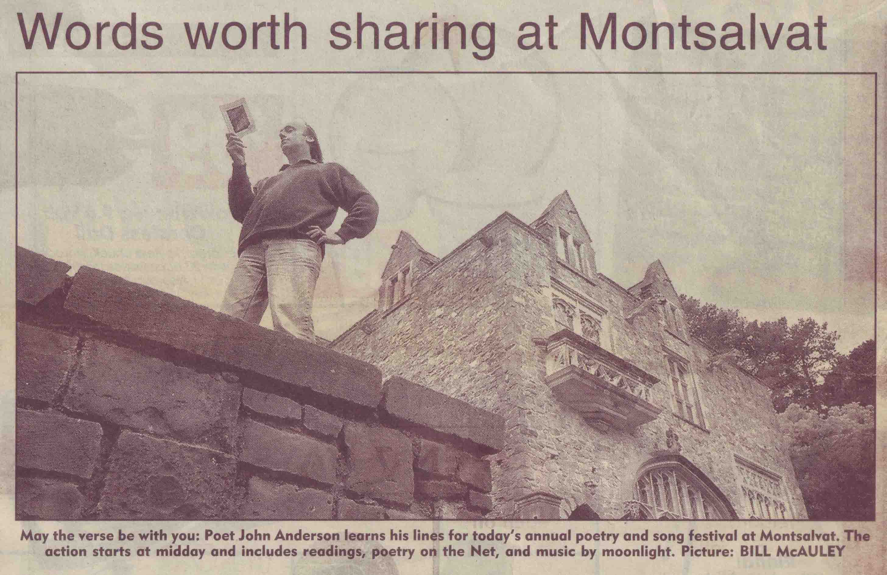

John Anderson was born
in 1948
at Kyabram, Victoria, where he grew up on an orchard. The locality was
once covered with thick forest and its name is thought to indicate
this. That forest is the one he would have most liked to have seen. He
lived in Melbourne after 1966 and after 1975 near the Merri Creek. He
travelled in Europe, South-East Asia, Niugini and extensively around
Australia. His first collection of poetry was
the bluegum smokes a long cigar
(Rigmarole Books, 1978), followed by
the
forest set out like the night and
the
shadow’s keep.
John Anderson died of a sudden illness in
1997.
Back to top

22 December 1996,
Herald-Sun
Notices
on John Anderson
Leaves
from the Australian bush: the life and work of John Anderson
Gary Catalano
Ulitarra,
No. 15, 1999
John Anderson wasn’t at all widely known when he died
unexpectedly late
in 1997 at the age of 49. He had published just three books of poetry
during his life and hadn’t been included in any of the major
anthologies. Indeed, if we put to one side
3 Blind Mice, a
fugitive and
somewhat eccentric compilation edited by Kris Hemensley, Walter
Billeter and Robert Kenny for Rigmarole in 1977, Anderson failed to
make it into any of those books which, over the past 25 or so years,
have sought to take the pulse of contemporary Australian writing.
Yet it’s clear that Anderson had many admirers in the
literary world. A
large number of writers certainly came along to his memorial service at
St Mary’s Anglican Church in North Melbourne on 5 November
1997, and
already there are serious moves afoot to provide a lasting memorial to
him in the form of a series of plaques (suitably inscribed with
passages from his work) along the last 6 kilometres of the Merri Creek,
the subject of one of his best poems. That interest in his work is
steadily growing is indicated by the posthumous appearance of his poems
in such journals as
Heat
and
Jacket
(John Tranter’s internet
magazine) and the pending publication of some poems and a memoir in
PN Review. His
literary executors
say that there is the distinct possibility of a selected edition of his
work in the near future.
Anderson was born in 1948 and grew up in Kyabram, where his parents
owned an orchard on which they grew pears, peaches and apricots.
Everything suggests that he had a strong emotional attachment to both
the orchard and the flat and seemingly monotonous landscape in which it
was situated: his family, after all, had been in the area for some time
(his paternal grandfather had been a soldier settler), and there were
many things about farm life that he liked.
But he was far from being a typical farm-boy and had none of the
interests which are often characteristic of country folk. Machines held
no excitement for him (he never learnt to drive a car, for instance)
and sport appeared to be beneath his notice. Even during his early
childhood it was obvious to everyone who knew him that he was somehow
different.
Anderson had a deep interest in the natural world and knew an enormous
amount about it by the time he reached 17 and came to Melbourne to
complete his schooling. Ned Johnson, who met him at this time and
formed a friendship which would last until the end of his life, thinks
that this interest in natural science was a wider family enthusiasm,
for it was shared by both Anderson’s father and his sisters.
‘John and his sisters,’ Johnson observed in an
interview on 1 August
1998, ‘yearned for what had been there originally and would
get on
their bikes and ride all over the countryside looking for ancient river
redgums and box trees. They were great enthusiasts for the individual
characteristics of the various boxes. The romance of the unspoiled
Goulburn Valley was always strong with them.’ It is possible
that the
wonderful paean to the river redgum in
the
forest set out like the night was
seeded on these bicycle rides about the countryside.
Johnson thinks that the other members of the Anderson family were also
deeply interested in literature. ‘They loved
conversation,’ he said in
the same interview, ‘and literary discussion especially. They
really
enjoyed pithy descriptions of people and stories about who did what,
and they all read and talked about their reading.’
Given such an environment, it is almost natural that Anderson should
have begun to write at a very early age. The following lines, dated
1953, were among his papers on his death:
pretty
leaves
pretty
leaves
on the trees
on the trees
they are falling from
the trees
pretty
leaves
pretty
leaves
If the date is correct, Anderson must have been four or five when this
charming little poem was composed.
‘The Heron’, which he wrote when he was 10, is a
yet more interesting
piece of juvenilia, for it clearly lends support to the claim (which
Anderson himself made) that the most important influence on his work
was that of John Shaw Neilson:
By a
clump of stringy grass
A tall bird stiffly stood
Not far from there a
clear lake lies
But further on a wood
The bird it is a wading
bird
And there it stays all
day
But when darkness softly
falls
It slowly flies away
The bird is flying
homeward
To its shelter midst the
reeds
And there it finds the
quietness
And the haven that it
needs
It watches the moon
rising
And it glides from
shadows deep
Then turning its head
slowly
It goes quietly off to
sleep
The sense of enchantment evoked by these slowly gliding lines puts me
in mind of Shaw Neilson’s ‘Smoker Parrot’.
Anderson never questioned his vocation. Ned Johnson has said that right
from the moment they met in 1966 there was never any doubt in
Anderson’s mind that he was a poet and that ‘he
never entertained any
other idea’. He had, in short, a confidence in himself which
no amount
of rejection could shake.
In all likelihood, this confidence ensured that he would be very
selective in what he gave himself to. Young writers - especially when
they are beginning to write - tend to be somewhat indiscriminate in
their enthusiasms and often like poetries which are basically
incompatible with one another. Anderson wasn’t at all like
this and
looked askance at some of the things which were beginning to transform
our literary culture during the late 1960s.
Ned Johnson is illuminating on this. Recalling their days at Melbourne
University, where both of them studied English, he stressed that they
associated only with their fellow students. ‘I remember only
going once
to listen to the La Mama poets - and they were only a hundred metres
away! - and we felt they were revolting against the tradition we had
been brought up on and admired. We felt the continuity was under threat
and we weren’t that enthusiastic about that.’
Anderson was sceptical about some of the other defining enthusiasms of
the time. He liked Bob Dylan, but never believed that what he wrote and
sang was poetry. ‘Those of us who felt that we’d
read Shakespeare and
Wordsworth and Keats and Eliot and Yeats,’ Johnson observed,
‘felt [it]
was insulting a great tradition that someone as inarticulate and
incoherent [as Bob Dylan] should be regarded as a great
poet!’ Anderson
was in fact an ardent fan of the Rolling Stones.
Anderson eventually came to see something in what had gone on at La
Mama, though this illumination only occurred after he met Robert Kenny,
and found himself published alongside such writers as Kris Hemensley,
John Jenkins, Robert Harris and John Tranter in the first issue of
Kenny’s journal,
Rigmarole
of the
Hours. Although Kenny is unable to recall just when and
how he
became aware of Anderson’s work, he has a vivid memory of
their first
meeting. ‘We spent the whole day in his room in Kerr Street,
Fitzroy,’
he said in an interview on 19 June 1998, ‘talking about
poetry.’ It was
partly on the basis of, this meeting that Kenny invited Anderson to
contribute to his projected magazine.
Kenny also put Anderson in touch with Ken Taylor, whose first
full-length book,
At
Valentines,
he was preparing for publication by Contempa Publications. He sensed
that the two writers had much in common and felt that Anderson would
benefit from meeting some of the writers with whom he was closely
acquainted. ‘He really didn’t have much contact
with people in
Melbourne at the time.’
Kenny’s intuitions were right: although there was a
difference of 18
years between them, Anderson and Taylor did have much to talk about and
quickly formed a friendship that lasted until the end of
Anderson’s
life. But we shouldn’t conclude from this that Anderson was
in any way
Taylor’s acolyte or disciple. As Kenny recognised, there were
considerable differences between the two.
These differences become apparent as soon as we compare the dry and
even austere manner in which the title-poem of
At Valentines
begins:
At
Valentine’s now
we potter with boxes,
(the smell of ants,
urine by the
corrugated iron,
sand,
dried gum leaves,
rain spattered bottles
show the dust of
drops of rain
near the shed)
still keep
small ends of wire
found,
snipped and
scattered near the
base of poles...
with the first poem in
the
blue gum
smokes a long cigar, the book of Anderson’s
poems that Kenny
published under the Rigmarole imprint in 1978. ‘The
Brachychiton
(Kurrajong)’, the poem in question, begins like this:
Study
the leaves of the Brachychiton.
And you will be ready
for any turn in
the conversation
What holds true in a
grove of
Brachychitons
Holds true in
wheatfields and oaks
The kind of thought that
I aspire to
Would not disturb one
leaf of
Brachychiton
I am not self conscious
in the
Brachychiton
Some are afraid in the
Brachychiton
Brachychiton Brachychiton
Enter the Brachychitons
Robert Kenny recalls that he was initially attracted by the quirkiness
and individuality of Anderson’s poetry and by what he termed
its ‘sense
of bush Dada’. ‘The Brachychiton’ may not
be Anderson’s most playful or
Dadaist poem, but it is unquestionably individual in both its tone,
which is simultaneously assertive and dreamy, and its communicative
intent. In recommending that we school ourselves on nature and seek to
merge with it in such a way that we leave it undisturbed, Anderson was
giving the romantic imperatives of the 1970s their most intense
literary expression. We have to look outside literature - to the
neo-primitivist sculptures of John Davis, for example, or to the
paintings of John Wolseley - to find something comparable.
‘The Brachychiton’ has a special significance for
Ned Johnson. ‘I
always used to talk,’ Johnson has said, ‘about that
line ‘Enter the
Brachychitons’ and the connotations it has of someone going
on stage.
But he was also announcing that he wanted the trees to be on show, so I
think in a sense it was a commentary on a lot of the poetry of the
time; that really the attention should be directed more on
things.’
Johnson’s interpretation is correct. But if Anderson believed
passionately in outwardness, in arriving at self-knowledge through a
sustained scrutiny of the things of the world, the poetry he wrote was
also fuelled by a determination to keep his readers guessing. Before
anything else, the poems in the blue gum (or at least the first half of
the bock, for the second half is composed of some prose poems and a
couple of pieces of discursive prose) are distinguished by a consistent
line-by-line surprise. There is perhaps no better example of this than
the title-poem, which I quote in full:
The
bluegum
smokes a long cigar.
A silver cloud is parked
beside it.
The gravel is washed
and a Canberra diplomat
in a slim dinner suit
is idling his legs from
the bonnet.
A beautiful sylph bursts
from a grey
cocoon
on the tree trunk
and wreathes him in grey
silks
She is a moth,
But she drinks champagne.
The full text of this poem is printed in white letters on the cover of
the book. According to Robert Kenny, Anderson liked to refer to the
blue ground of the lettering as a Gaulois blue.
Kenny also recalls that at their first meeting he and Anderson had
spent a long time talking about Francis Ponge. Both of them owned
copies of
Things,
Cid
Corman’s marvellous selection and translation of
Ponge’s work published
by Grossman in 1971 (on his death, Anderson’s copy of this
book was
exceedingly well-thumbed and almost falling apart), and both of them
had been greatly taken by what Kenny terms Ponge’s
‘sense of approach
and re-approach’ and the exhaustive and somewhat scientific
way in
which he looks at things like pebbles and drops of water.
Ponge makes a statement in one of the poems in
Things which must
have impressed
Anderson deeply. ‘If it is possible to found a science whose
material
would be aesthetic impressions,’ he says in
La Mounine,
‘I would be a member of
that science.’ Put simply, it is precisely such a science
that we find
adumbrated in a good number of the prose pieces which form the second
half of
the blue gum.
The
fineness of Anderson’s aesthetic response to the world is
admirably
conveyed in the penultimate prose piece, which has to be quoted at some
length in order to make its full impact:
The
idea that the Australian bush is drab and monotonous is well
established in our literature. It has some truth, but even the greyest
bush is sometimes relieved by a certain fragile glittery sub-theme, on
the drier inland slopes more crystalline and unsoftened by climate.
The theme is picked up
on the tips of
things: gum leaf glitter, red gum-tips, twigs white sheened or
enamelled in Chinese oxblood; and in the crevices: exposed quartz, an
ant dragging its shiny abdomen over leaf litter, knobs of hardened gum
sap (kino) fastened like rubies to trunks.
Movement is part of its
quality and
its keenest edge is animate. Insects and birds are its untrapped - its
most unstable cells.
It seems the spectrum
poured itself
in an almost pure prismatic form on the parrots, finches and wrens,
which act as its agents, flitting through a leached backdrop
distributing colours.
Later on in the same piece Anderson invites a comparison with Les
Murray. Just as Murray at this time was attempting to suggest that
‘the
synaesthetic signature note’ of the Australian landscape
could be found
in ‘the sharps and flats of midsummer blowflies’
(see ‘The Human
Hair-thread’,
Meanjin,
No. 4,
1977), so Anderson’s scrutiny of the landscape results in him
translating the visual into the aural:
In
some, respects I think Balinese music provides a successful metaphor.
Despite its origins Balinese music catches something in the Australian
setting, and I think because it provides the same tinkling contrast to
the bush as is suggested by its own metallic glints and shining
surfaces.
It seems to pick its way
in a series
of disconnected points. It gives just the right amount of form without
imposing too much. Its rhythms are hidden and natural. Subtle enough to
catch and lend fluency to the songs of crickets, frogs, cicadas and
bellbirds, sometimes disappearing like an invisible songbird behind a
static screen of notes. And capable of exuberance, too. Gumleaf glitter
in wind is the visual equivalent of a torrent of gamelan.
This meditation obviously meant a great deal to Anderson, for he
incorporated it into his second book,
the
forest set out like the night,
when it was published in 1995.
For a number of reasons, the full story behind the 17-year gap between
Anderson’s first two books cannot be told here. Suffice it to
say that
Island Press, Paper Bark and Angus & Robertson all expressed
interest in publishing
the forest at some
stage, but for
various reasons all three publishers decided they could not proceed
with such an unconventional manuscript. What could any of them really
do with a collection of poems in which drawings formed an essential
part of the text?
A & R probably came closest to taking the plunge.
Kevin Pearson, who eventually
published the
book at Black Pepper, has told how John Forbes, during his tenure as A
& R’s poetry editor, had edited the manuscript in
order to make it
more conventional and therefore more attractive to the publishing board
at A & R. In an interview conducted on 19 August 1998,
Pearson suggested that the
length of the
original manuscript was an issue. ‘From memory it comes to
118 pages
now; and I think part of the editing had been to get it down to a more
acceptable length, in commercial terms, of about 70 to 80
pages.’
Pearson
recalls that Forbes had dispensed with
Anderson’s drawings in the process.
It is fortunate that
Pearson
viewed them
differently and didn’t have a board to deal with at Black
Pepper. On
comparing Anderson’s preferred manuscript with the shorter
one, he
quickly came to the conclusion; that he wanted to publish the former.
‘I also immediately thought that the illustrations were
central to the
text and, I suppose, the metaphysics behind the text.’ A
couple of
Anderson’s drawings are in fact reminiscent of the work of
John
Wolseley, the English-born landscape artist who was given the honour of
launching the book.
At the launch, which was held at the amphitheatre near the Fairfield
boathouse - and thus within sight of the Yarra, which figures in the
book - Wolseley spoke from notes jotted on the back of an envelope.
This envelope makes extremely interesting reading, as does the covering
note Wolseley wrote in July 1998 when he forwarded it to the current
author. The latter document plainly implies that he saw
Anderson’s
poetry as the perfect explication of his own work, for he openly
acknowledged that his speech was about his own obsession with how we
could learn to understand Australia. Anderson’s five-page
prose poem
about the Grampians in the book provided him with a ready quote:
‘it is
in such places that one might expect to find clues to the
continent’.
As anyone familiar with his work will no doubt know, John Wolseley is
deeply indebted to William Blake and the English pastoral tradition in
general. He actually mentioned Blake in his speech and quoted a number
of passages from Anderson’s book which, in his view,
exemplified the
kind of particularity of detail that Blake insisted on throughout his
life. Among them were these lines from ‘love, the
cartographer’s way’,
the second of the three sequences - or, rather, metapoems - which make
up the book:
Oaks,
elms, poplars, pines, all ruled in greater degree by the sun.
Proceeding by a sort of euclidean logic, an assemblage of hierarchical
forms, pyramids, domes, genealogies, exercises in three dimensional
perspective. Favoured by the more apparent regularity of the solar
calendar.
The gum opens out to the
night,
presents faces to the night sky which recede and advance like space
itself.
It’s interesting that Wolseley should have singled out this
passage,
for one of its details helps us to see how much of Anderson’s
second
book is either implicit in, or foreshadowed by, his first. When the
poet refers, for example, to the Euclidean logic of those four exotic
trees, some readers will turn back to the blue gum, one of whose poems
begins with these lines:
What
puts the finishing touches to my sleep?
The Blue Swift. The
non-Euclidean
eucalypt.
What’s in a
name?
Sailcloth and literary
allusions.
It would not be a gross exaggeration to say that Anderson’s
whole
intent in the second book is to explain - both to himself and to the
reader - just what he means by ‘the non-Euclidean
eucalypt’.
Anderson begins by recounting a dream, which introduces a ten-page poem
about the Merri Creek. Ned Johnson has said that this poem was written
as early as 1983, for he remembers Anderson reading it to him in this
year - after first having read it to Liz Connell, another long-standing
friend. The poem, Johnson says, was quite simply ‘a
discovery. I knew
he had big poems in him and this was it. It overwhelmed me.’
But the poem Johnson recalls hearing in 1983 is not identical to that
in the book. Anyone who reads the printed version will, I think, be
conscious of certain similarities with Aboriginal song-cycles, and
especially so on the first page of the poem, where Anderson describes
the meeting of the Merri, that ‘wise wince in the
landscape’, and the
Yarra:
So
the Yarra collected itself, grew and grew into a great
lake and laid down the
flats of
Ivanhoe and Heidelberg.
Laid them down.
Laid down those flats.
Bayrayrung the Yarra
thought and
thought. Thought out
how to cut around the
lava tongue,
through the softer
sandstone, making the
Yarra cliffs.
These similarities were far more pronounced in the first version.
Johnson believes that Anderson subsequently toned down ‘the
sort of
Aboriginal voice-pastiche’ in order not to give offence. In
all
probability this superseded draft was based on one of the texts in R.M.
Berndt’s
Love
Songs of Arnhem Land,
which
Emma Lew has said was
Anderson’s
favourite book.
Towards the end of his poem about the Merri, Anderson uses the phrase
‘that complex crosshatch of overlaid / impressions’
- apparently in
reference to the surface of a pool at the base of two small cliffs. In
some ways this phrase adequately describes the whole poems itself, for
the thoroughly lyrical sensibility behind it is continually being
sidetracked by a new perception, a new impression. Anderson’s
responsiveness is such that virtually everything he apprehends is
capable of triggering a renewed meditation on place:
down
in the stream bed
terraces
rounded rocks in shoals
a Zen stone garden effect
like shoals of thinkers
these \
stony domes
thinking that the stone
collectedly
thinks
we collect ourselves in
the stones
the Merri Creek saying
the right
things
over and over
When the memorial plaques are put in place the last six lines of this
quotation will be inscribed on the fifth plaque, which will be located
on the footbridge across the Merri directly behind Rushall Station.
It should be observed that the footbridge in question figures in the
poem:
All
around some excitement, some enchantment
in the old brick houses,
with their
towers
and palms, standing like
churches
over the
sacred spots... The pine
tree and the
Japanese
footbridge waiting for
Hokusai
The fact that those readers who know the Merri will recognize it
instantly says a great deal about the accuracy of Anderson’s
‘crosshatched impressions’. His poem about the
creek would be an
essential part of any comprehensive literary guide to Melbourne.
The metapoem which it inaugurates proceeds through the logic of
association. A reference, for example, to blackberries (Francis Ponge
has a wonderful poem about blackberries in
Things) in
‘The Merri Creek’
stimulates the poet to recall a dream in which blackberries figure as
‘the tears shed by black women / for their men who lie
murdered’, and
that in turn soon triggers a passage about the black duck. The black
duck then becomes the subject of the following poem, which points out
that it is interbreeding with the European mallard and thereby losing
its ‘distinctive wise eye’. Another form, Anderson
goes on to observe,
is passing away.
the
forest
set out like the night is above all a metapoem about form. At
times
the form is zoological in character, as in the above-mentioned poem on
the black duck. At other times it is botanical, as in the paired
homages to the river redgum and the red flowering gum or his somewhat
more lyrical effusion about the casuarina, parts of which demonstrate
an exceptional visual acuity:
they
do not cast deep shade
they are themselves
floatings of shade
smudges
light pencilled shadings
over the
landscape
And at yet other times it is geological in character, and notably so in
that long central prose poem about the Grampians which I alluded to
earlier.
But in all of these cases we intuitively understand that Anderson is
also writing about aesthetic form. The great virtue of
the
forest set
out like the night - both the book and, more specifically,
the
metapoem of that title - is that it demonstrates that a curiosity about
the world and an aesthetic response to it can be one and the same thing.
It is fortunate that he found a publisher who was prepared to print it
in its entirety.
Kevin Pearson
(Anderson’s
‘saviour’, Ned Johnson insists) drew the right
conclusion when he
decided that the drawings were central to the text, though at that
stage he was not to know that their inclusion would tax the skills of
his production staff. ‘When we originally had
them,’
Pearson
has related, ‘the book was unpaged to
book format, so we had a fair amount of juggling to get them to sit by
their most appropriate text.’
Pearson remembers that
the delicacy of
Anderson’s drawn lines also caused a few problems. Sometimes
the
production staff had to ‘lift the very faint pencil drawing
in order to
stop it being submerged by the depth of the text. That was a delicate
operation because we didn’t want to make them hard-edged; the
integrity
of them depended on them being lightly touched onto the drawing
surface.’ The drawings in short, should be like a casuarina.
Pearson’s one
disagreement with his author
was over the cover design.
Gail
Hannah, the
co-publisher at Black Pepper and the designer of all its books, had
initially wanted to use an image by the Aboriginal artist, Donna
Leslie, on the cover of
the forest set out like the night.
Anderson would have none of that. Even though he quite liked
Leslie’s
painting and admitted that it had some relevance to the second of the
book’s three sections, he insisted that one of his own
paintings be
used in its place. He argued his case in a long letter to his
publishers, parts of which are particularly revealing about the intent
of his writing.
Here he is writing about the significance and role of his preferred
cover image:
I see
the cover as the first page of the text. I also see the text as a
painting of this land. My writing is very visual.
Because the writing is
so visual, the
choosing of the cover is a particularly delicate matter. It is a window
into the writing. This cover is the most effective because it rises -
from the same vision, as though the text was seeping through and
saturating the jacket.
My line is here.
Immediately after making this statement he quotes six passages from his
work which, he believes, ‘are of a body with the image I have
painted.’
Interestingly, the second of these passages is actually a short poem in
the blue gum:
I
would like to build a house without conversation
as though I were
building a nest
No monument to the
Tidiwaki tribe
Just a smooth passage
through
everybody’s mind
in the manner of the
Thames.
Anderson renders that quotation exactly in his letter. But in quoting
the last of his six passages of significance, he changes the first of
the following four lines:
I
think everything has been told
I like to hear the
ripples of the
telling
the croon of the gums
the violet magpie songs
and uses ‘believe’ in place of
‘think’. These lines, which are very
nearly the last of his metapoem, will be inscribed on the third
memorial plaque.
Towards the end of his letter Anderson acknowledges that the whole book
should be seen as a single thing. ‘More than most collections
of poetry
consisting of individual self contained poems,’ he observes,
‘this book
is the sum of its parts, a sequence forming a metabolic whole. It is a
special case.’ He doesn’t use the term metapoem,
but this is obviously
what he means.
I think it can be argued that Anderson’s last book, which was
launched
shortly after his death, has an even more obvious unity to it. Whereas
the second book has a surface untidiness which is essential to its
aesthetic effect,
the shadow’s
keep has a somewhat programmatic
quality and is actually set out like a scientific paper: first we have
‘the shadow’s keep’, a 38 page-section
consisting of single lines which
came to Anderson in his dreams; then we have ‘the beginning
tincture of
what I wrote’, an 8 page essay on the manner in which those
lines were
received and on what Anderson has done with them in ‘a
zephyric
alphabet’, the final section in the book. That section - the
results of
the experiment, so to speak - contains 8 pantoums wholly composed of
dreamlines listed in the first section.
Originally the book was going to consist simply of the dreamlines which
Anderson had been recording during the years in which he had suffered
from sleep apnoea. Anderson believed that these lines shared some of
the qualities of poetry and that some could stand as individual poems.
‘They have an aptness of language,’ he wrote in the
central essay, ‘a
decided tone, a distinct rhythm and vibration, surprise and resolution.
They have the power to awaken, as poetry can.’
I’m not sure that all of these claims are justified.
It’s easy to find
lines which have a genuinely surreal quality, as I think the following
do:
*
chaos is the last labour of salt
* dust is your conjuror
* words that would
feather us
It’s easy to find lines which are funny:
* Why
stage an Aristotle of significance?
* tomatoes, potatoes, my
rapscallion
heart
And it’s also easy to find lines which (as one would expect
of an
admirer of Mary Gilmore’s prose writings) suggest the eye and
imagination of a social historian:
* the
jam-tin with the glory off it
* tearing off the
cardboard and
singing to the crockery
* The Aborigines. They
weren’t
fishing on the same surface
*
‘Australia’ was an old weathered
rooming cottage in 1924
But even at their very best these lines suffer in comparison with the
single-line poems of the great Objectivist, Charles Reznikoff. Here are
three such poems from his
Poems
1918-1975 (Black Sparrow, 1989):
* The
ceaseless weaving of the uneven water
* The trees in the
windless field
like a herd asleep
* The cold wind and the
black fog and
the noise of the sea.
Reznikoff’s one-liners are more audacious than
Anderson’s and provide
the reader with more aural pleasure. Anderson appeared not to
understand that the content of one’s dreams is not
automatically
interesting to other people.
Maybe it was this realization that led Anderson’s publisher
to suggest
that he change his conception somewhat. ‘I felt that the
one-line,
standing singly as a unit,’
Pearson
has
explained, ‘was unconventional enough to require some sort of
explication. I’d been speaking to John over the years about
poetry and
the origin of poetry, so I felt that he had things to say and that this
was an opportunity.’ It was while he was following up this
suggestion
that Anderson became aware of the pantoum as a form.
Anderson was introduced to it by his fellow-poet,
Emma
Lew, with whom he lived for the last two years of his life.
Lew says she discovered it in a
book by the
American poet, John Yau, who apparently refers to it as a
‘Chinese
villanelle’, though the form is in fact Malayan in origin. In
some ways
it’s fitting that this flowering of Anderson’s art
should have been
indebted to Asia, for the countries, cultures and religions of Asia had
attracted him for much of his adult life and obviously affected the way
in which he thought about Australia.
Of the eight pantoums grouped together in the final section, the best
is probably ‘I am a thistle with open arms’, which
appeared in
The Age
shortly after Anderson’s
death. As its first stanza. suggests, it’s a strange and
genuinely
eerie poem:
I am
a thistle with open arms
I caught fire in the
valley
The mountains took a
long roll
outwards
They were a fan in my
heart
and surely part of its eeriness is due to the fact that in it the
author appears to have sensed his own imminent death and imagined his
dispersal into the wider natural world. Anderson knew what it was like
to be a thistle with open arms!
Anderson was clearly changing a great deal towards the end.
Emma Lew says that he’d
begun to read both Francis
Webb and Emily Dickinson with real pleasure and admiration, so we can
scarcely guess at what kind of poetry he may have written when his
imagination had taken stock of such material. Robert Kenny, who had
observed his work for a long time and had published his first book,
thought he was on the verge of creating ‘an Australian epic
persona’
and thinks that the pantoums indicated that he’d begun to
acquire the
‘structural tenacity’ such a task required.
Kenny’s contention might well meet with support from Les
Murray, who
had been sufficiently impressed by
the forest set out like the night
to
suggest that its author would prove to be influential. When he learned
of Anderson’s death, he felt he had to write to
Kevin
Pearson. Anderson, he said, ‘did good poetic
architecture and he
owned his own mind.’
BIBLIOGRAPHICAL NOTE
I would like to thank Ned Johnson, Robert Kenny,
Emma
Lew, Jenni Mitchell,
Kevin
Pearson,
Hugh Tolhurst
and John Wolseley, all of whom
shared their memories of John Anderson with me and in some cases
provided me with documents and manuscripts. This essay could not have
been written without their assistance.
Back to top
ArtStreams,
December
1997/January 1988
John Douglas Anderson grew up on his family’s orchard in
Kyabram.
Victoria, where he was born on 20 March, 1948.
Throughout his relatively short life he retained his closeness to the
land. He travelled extensively in Europe. South-East Asia and New
Guinea, but he also travelled throughout Australia and the secrets of
the landscape found their way into his work, whether they were to be
found in great deserts and forests or the rocks, water, fauna and flora
of the Merri Creek.
His literary sources were wide and varied but they had one thing in
common. Anderson was at one with any poet who shared his love of
nature. But that poet would be one who took the inspiration of nature
into the inner recesses of the mind and spoke of something more
universal than its starting point.
Published in many magazines, Anderson produced three volumes of poetry
during his 25 years of writing:
the
blue gum smokes a long cigar (1978),
the forest set out like the night
(1995) and
the
shadow’s keep,
published by Black Pepper.
John Anderson, who was well known in this region for his regular
readings at Montsalvat and where ever poets gathered, died of leukaemia
in the Alfred Hospital after a short illness in October. He fell ill
suddenly while returning from West Australia where he had been engaged
in research for his next collection.
He will be sadly missed by the literary fraternity in this region and
throughout Australia.
Back to top
John Anderson (1948-1997)
Kris Hemensley
Heat, No.
7, 1998
At the end of the year or so in which
the
forest set out like the night and something like its coda,
the shadow’s
keep, were published
by Black Pepper, reversing years of frustration at other
editors’
hands, and on top of the world as he seemed to be, in health, life and
work, John Anderson is suddenly dead. In my contribution to the
Thanksgiving Service, at St Mary’s in North Melbourne on 5th
November,
I offered the obvious, that for poets the words are almost
all-important. Never more so than at a poet’s death, was my
unspoken
corollary. It might have continued: At the poet’s death so
begins the
poem’s life, when only the poem can speak for the poet, when
the poet
returns to the little bit of earth that poetry makes its own in owning
up to its share of the life of the earth, that long life in which human
being is but one of its integers.
This beckoning of a certain kind of poetry from the edge of extinction
is responsible for the peculiar regard surviving poets reserve for
their dead. Far from having lost the poet to oblivion, which is the
normal truth of it, most painfully apparent to family and friends, the
poets in their asociality are challenged to receive the poet more
deeply and dearly than ever before. Poetry, one is reminded, is a
challenge to extinction or it is nothing.
Outside of the poets’ world, self-delusion or superstition;
within it,
indistinguishable from the poet’s awareness of the conjuring
that
phenomena deal to one’s senses. Thus Bonnefoy, ‘I
am haunted by this
memory, that the wind / All at once is swirling over the closed up
houses. / There is a mighty sound of flapping sail throughout the
world, / As if the stuff that color is made of / Had just been rent to
the depth of things.’ Or Ponge, perhaps John’s
first exotic master,
‘Now that I know my destiny I can perfectly well throw these
pages to
the winds and this very one, the last of them, can be their plaything.
// Since my principles are now hereby revealed, and since, after
hearing them spoken in my own voice, you my readers, have nonetheless
READ them as inscribed - so well // That they are now as deeply
engraved in your memory as on a stele, unaffected by future gusts of
wind.’ (Yves Bonnefoy,
In
the
Shadow’s Light (Chicago, 1991); Francis Ponge,
Selected Poems
(Wake Forest, 1994)).
Poets that we are, the terms of death loop about our words like air,
inextricable from the terms of love and the eternal. I once told John
of the American poet Lew Welch’s disappearance and presumed
suicide,
near Gary Snyder’s property in 1971. We talked about
Welch’s ‘Song of
the Turkey Buzzard’, one of his last poems, in which appears
a ‘Last
Will & Testament’ proposing ‘Let no one
grieve. / I shall have used
it all up / used up every bit of it’. The poet requires
compliance with
his instructions to lay him upon a rock and avoid frightening
‘the
natives of this / barbarous land, who / will not let us die, even, / as
we wish’. Welch orders, ‘With proper ceremony
disembowel / what I / no
longer need, that it might more quickly / rot and tempt/ my new
form’ -
and signs his warrant off, ‘NOT THE BRONZE CASKET BUT THE
BRAZEN WING /
SOARING FOREVER ABOUT THEE O PERFECT / O SWEETEST WATER O GLORIOUS /
WHEELING / BIRD’. (Lew Welch,
Ring
of Bone: Collected Poetry, 1950-71 (Greywolf, 4th pr.,
1978);
John Anderson,
the blue
gum smokes a
long cigar (Rigmarole, 1978)).
John considered that if one was able to choose the manner of
one’s
death, something like Welch’s ceremony would be acceptable.
Had John
been prescient of his tragic end, he may well have preferred the desert
to the hospital, and the brazen wing to the bronze casket.
John Anderson’s
the
forest set out
like the night represents this exquisite moment when the
panoply
of idiosyncracy, all of that private hoarding which is a bulwark
against the incoherence ever threatening a phantastical
poet’s life and
work, transformed into a cosmology. All that had been divulged in his
first collection,
the
blue gum
smokes a long cigar (Rigmarole, 1978) and more recently,
as
fleeting evocations of landscape, gathered from encounters he reported
like dreams, tonally indistinguishable from fantasy and dream, and as
keenly recounted as the naturalist in him would record the fauna and
flora experienced on his habitual walks, now became substantial,
legible, public.
Reading this book, his three books as a continuum, remembering it
across twenty-odd years as shards, half-shapes begging unity, I feel as
relieved and delighted as he must have been when he’d finally
constructed his manuscript and realised his long cherished project.
Reading it I hear him as audibly as if he were once again reciting it
before me, speaking his poems as statements of self-evident truth, of
which, at his most assured, he was convinced. Many other times he
needed reassurance, reinspiration. In 1980, two years after the
publication of
the blue
gum smokes a
long cigar, John confided that he might now have
sufficient
material for a second, small collection of landscapes, dreams and
humorous pieces. In our continuous conversation I would oppose his
concession to the miscellaneous, insisting that he heed the design of
his vision, urging the larger work, the whole project as antidote to
the dilettantism of the age.
Some years ago, I compared John Anderson and the American poet Charles
Stein under the rubric ‘self made cosmologies’.
‘I’m persuaded to read
John Anderson’s work-in-progress (which probably includes the
collection
the blue gum
smokes a
long cigar: for what may have seemed to be a book of
occasional
pieces then, registers now as part and parcel of a life work, and, in
the manner of
Leaves of
Grass,
that kind of life-poem), his criss-crossing of the symbolic and the
actual, the generally observable and the intensely personally
perceivable, as a cosmology, a cosmology what is more, that satisfies
what empires of realism have yet to announce, a palpable representation
of place (in this case, ‘Australia’). The complex
reality of Australia
that Anderson seeks to reveal can exist only as a poetic construction.
Only in the poem can his ‘dream-lines’, for
example, find their
correspondence in particulars of geology or botany or mythology. His
ornate map of Australia is also a self-portrait, a statement in which
he finds himself reflected. It’s one of the very few
contemporary poems
(albeit in a thousand pieces, unfinished) in which
‘Australia’ can be
taken seriously. Curiously, though it can be associated with the design
of certain English (Allen Fisher, Chris Torrence, Iain Sinclair),
American (Olson, Snyder, Irby, McCord
et
al), Canadian (Daphne Marlatt, Brian Fawcett) and New
Zealand
(Alan Loney) poets who have been intent on placing names, as it were,
in a sense of history that includes body and psyche,
Anderson’s
‘Australian’ poetry benefits from the same
eccentricity as serves
Charles Stein’s assemblages. The things, images, references
they have
assembled comprise a personal repertoire... The oracle is discounted by
the subjectivity of the narrator (‘The writer is a stone in
the Merri
Creek’). It’s Robinson Crusoe’s
enterprise: self-preservation via the
reinvention of the world...’ (Published in
HEAR/t, Melbourne,
1983-84; see
Charles Stein,
Parts
and Other Parts
(Station Hill, 1982))
At the very least, Anderson is an integrator. To quote the worlds of
E.L. Grant Watson, the scientist and poet/novelist, friend of W.H.
Hudson and Edward Thomas, who spent some crucial time in Australia and
seems to me a soul-mate for John, ‘Of reality itself, we know
nothing,
and are not likely to know more than its reflection in the symbols that
are mysteriously presented to our senses... At the vanishing periphery
of sense-perception we touch the noumenal, from which instinctive
actions proceed. Instinct guides the sea-slug and the fig-wasps; it
appears to flow non-causally, and has so far defied the meticulous
investigation of bio-genetics. We see it as something unselfconscious,
as though it slept - and dreamed. Our task is to enter into the dream
of Nature and interpret the symbols.’ (E.L. Grant Watson,
Descent of the Spirit: Writing
of E.L.
Grant Watson, edited by Dorothy Green (Primavera, 1990))
John
Anderson was that kind of dreamer.
Here is a poetry not possessed by categories, as prepared to suspend
lyrical authority for mantraic sublimation as to beg questions of the
art’s protocols. Not possessed by categories - except that he
was
awfully susceptible to that agent-provocateur, literary success, in
whose name literature is the sum of such accomplishment as forever
compromises the poet’s reality and priorities. Not possessed
by
categories - given the prose poem’s legacy of Rimbaud and
Baudelaire
and the linear and stanzaic flexibility of Anglo-American modernism,
Anderson, like so many of our generation, was free to concentrate upon
the poetic utterance
per
se
and the particular expression of his insistent subject-matter, the
demonstrably complex ecological figuring of Australia.
Not possessed by categories - to the extent that on many occasions
he’d
question the efficacy of poetry to tell his story. Why the poem as
such? Why not prose or doggerel? His dilemma was exacerbated by his
perception of the magnitude of the environmental crisis. If apocalypse
was imminent, should one write the poem or join the resistance? Through
the years John often spoke as if hamstrung between witness and
activism. The status of witness changes with context, is demoted by
politics, raised by poetry and religion, but such was his perturbation,
regarding responsibility accomplished as politics, that I believe he
invested more in the message than the medium. Of course, his opinions
and intentions are less conclusive than his history, which included an
early taste for Romanticism, Symbolism, Surrealism and forays in a
variety of magic and mysticism - or, indeed, than his work’s
effects.
Though he may have striven for direct, even transparent statement, the
art of his poetry invites appreciation along the lines of its
‘open
form’ or ‘protective’ poetics, in which
he found himself at his most
eloquent and with which he was happy to experiment. Only recently, and
probably under the influence of his friend Emma Lew, a poet of an
entirely different cast, did literary forms as things in themselves
interest him (thus his pantoum exercises). Which isn’t to say
that he
was a stranger to poetry’s normal grammar; but like so many
of the
Sixties’ generation he had eschewed almost everything of
verse for the
apparently infinite liberation of whatever’s
‘beyond poetry’.
Regarding affinity and influence, John Anderson retained a life-long
commitment to John Shaw Neilson and, moreover, in mid-century canonical
terms, to the poet ‘who created his own world of delicate and
elusive
loveliness by a vision that retained the joy and wonder of childhood
and a fresh simplicity akin to that of the Blake he [Neilson] had never
read’ (T. Inglis Moore,
Poetry
in
Australia, Vol. 1, 1964). When I showed him Robert
Gray’s
selection and revisionary account of Nielson’s poetics, John
was
intrigued but not deflected from what Les Murray would call the
‘pre-academic’ view. Amongst his contemporaries,
Ken Taylor is a major
reference tor the seriousness of his project if not also some of its
tone. Taylor’s ‘secret Australia’ is
visited poignantly in Anderson’s
evocation of the Twenties’ Anglo-Australian bush tennis-court
- ‘The
square was a sublime abstraction. The first clearing ever anywhere. A
European picturing of the bush. Exactly balancing the bush’s
picturing
of the European. The equation was then so neat it was easy to assume
that such an equilibrium would last forever’ (Ken
Taylor’s poem ‘Maurie
Speaks About a Secret Australia while in Iceland’ is the
source of the
title of his selected poems,
A
Secret Australia (Rigmarole, 1985), and is also theme and
title
of Robert Kenny’s notable essay on Taylor’s work in
the same book). I
can easily imagine John’s compatibility with other La Mama
poets for
whom ‘place’ was the same kind of issue that it was
for younger
generation poets in England and North America at the same time. I know
of his regard for Charles Buckmaster and Terry Gillmore, and wonder if
he ever investigated Allison Hill, Bill Beard, Ian Robertson and
others. John was candid about the snobbish opinion he’d
formed of the
La Mama poets from across the road at the University of Melbourne, and
how it had been shattered by what he’d since read and learned
of our
work and life. The story of the interaction that might have been could
equally apply to such poets as David Miller, Pete Spence, Walter
Billeter, Robert Kenny, Alex Selenitsch, and the so-called Monash
School poets,
Alan Wearne,
John Scott and
Laurie Duggan. Given John’s prolific generosity one could
discover some
level of affinity with practically every poet he was happy to share a
stage with. The likelier members of his poetical community were,
however, Alexandra Seddon, Anna Couani, Ania Walwicz and berni
janssen—all intersected John’s work strongly at
various times. They
appear to me to share that experimentalist ability to fashion a writing
surface whilst representing the subject, which John admired.
Laurie Duggan’s
The
Ash Range
gave him renewed hope for his own book-length map and history project.
Likewise Mark O’Connor’s forest and reef poems and
photographs, Liam
Davidson’s topographical prose, and Philip Hodgins’
rural themes. Geoff
Eggleston’s albeit truthful depiction of Anderson as a
‘nature poet’
seemed to belong to the superseded dichotomy of a previous
era’s
discussion, as naturalist subjects, nature-advocacy and Australian
topography were renewed in poetry and prose in the 1980s and
’90s, and
John’s writing moved from an
avant-garde
and non-mainstream periphery to the rejuvenated centre of Australian
poetry. Robert Gray, Judith Beveridge, Anthony Lawrence, Coral Hull,
John Kinsella, Craig Sherbourne - they all appeared contemporaries now.
Furthermore, the enthusiasm for Anderson’s project during its
round of
submissions from such readers as Gray, Adamson, Forbes and Wearne not
to mention eventual publisher
Kevin
Pearson,
and its endorsement from readers like Les Murray, Alex Miller and the
painter John Volseley, says something of this new perspective in
respect of both John’s work and the contemporary prospect.
The late and sadly missed John Anderson at least had the satisfaction
of knowing he’d set out a substantial part of his vision and
that his
insights, borne by accessible structure and hauntingly beautiful
imagery were actually being studied by an ever increasing circle of his
peers, poets and readers alike. What to the poet were sometimes
problems of ‘appropriation’ (his identification of
Aboriginal
story-telling in idiom and mythos), of sentimentality and eccentricity,
are to the reader the proper form of his mellifluous lucidity. Like his
beloved naturalists (Chisholm and Banfield and the rest) and so-called
naive painters (of whose company only the extraordinary Bastin is named
in his poetry), Anderson construes homecoming from his research,
wherein ‘each creature [including every manner of Australian,
old and
new]... was fondly known as part of the bib and bub, the closer social
and anecdotal river of it all’.
Back to top
Obituaries
This land was his
inspiration
John Douglas Anderson
Ned Johnson
The Age, 6
November 1997
Poet
Born: Kyabram, 20 March 1948.
Died: Melbourne, 28 October 1997, aged 49.
In a writing career spanning 25 years, John Anderson published poems in
many magazines and produced three slim volumes:
the blue gum smokes a long cigar
(1978),
the
forest set out like the night (1995) and
the
shadow’s keep (1997). He died of
leukaemia in the Alfred Hospital. Anderson’s parents kindled
his two
interests of poetry and the natural world on the family orchard at
Kyabram, Victoria, where he grew up.
The Australian landscape became the subject of Anderson’s
poetry and he
examined it closely: the stones, the soil, the water and the living
things, both large and small. He reclaimed the neglected places of this
continent as well as the well-known ones, and from them he forged a new
account of it.
His literary sources ranged from Wordsworth to John Shaw Neilson to
Charles Olson, and he made common cause with all poets who celebrate
nature. He wrote slowly and carefully ,and published only when the
words sang; he didn’t flirt with popular styles or attitudes
but found
his own voice through his chosen subject. Anderson was published in the
’70s by Robert Kenny (of the Rigmarole Press) and Kris
Hemensley, with
whom he maintained a lively conversation for many years. He performed
frequently at poetry readings around Melbourne and became a regular
reader at the Montsalvat Poetry .Festival. Gradually he attracted an
audience as, falteringly at first but with increasing confidence, he
described the world he saw.
Though he travelled in Europe, South-East Asia and New Guinea,
Anderson’s real inspiration came from his native land. From
his
Melbourne base he explored the continent, seeking out the secrets of
desert landscapes, of roadsides and forests and waterways, looking for
the heart of the country that isn’t stilled. In the centre of
Melbourne
he found the stream that inspired one of his finest poems,
‘The Merri
Creek’, which reflects on the rock formations, the water, the
blackberries and black ducks, telling us their story, and our story.
Anderson knew the seasons of the gums, the grasses and the insects. He
described the interconnectedness of things, of stars drawing toward the
earth and reaching down to the trees and stones, the leaf-forms and the
landforms.
His acclaimed second book,
the forest set out like the night,
published by Black Pepper, brought his understandings to the forefront
of contemporary Australian poetry. Most recently his third volume, also
published by Black Pepper, of ‘one-liners’ and
pantoums, presents lines
retrieved from dreams and challenges our concept of ‘the
poem’.
John Anderson’s sudden death is a great loss to Australian
poetry. He
was a gentle man who quietly, insistently gave voice to the unrecorded
rhythms that he sensed in our relationship with the world. He is
mourned by his partner, the poet
Emma
Lew, his
family, his friends, and all poetry lovers.
Back to top
Journal Notes
Journal Entry
John Anderson
Ulitarra,
Issue 17/18, July 2000
Taxi driver says his father remembers two species of gum no longer
growing round the township. The yellow box and the dida gum. The latter
remarkable for its beauty.
Suddenly we see one growing by a dam by the main irrigation channel,
just before the entrance to the town. It is surrounded by distinctive
vegetation. All its original trappings.
I experience a sense of elation coupled with a sadness that such beauty
has departed the district.
Because the tree is growing out of a mound of disturbed earth (its own
grave?) and is quite young its origin is open to dispute. The
townspeople will not believe that such beauty was once native to their
area. Perhaps this reflects their pride in the district as it now
appears. It is not a pride I share.
*
I am being driven too fast for comfort by a member of a Christian
spiritual group along Old Echuca Road, the road to my
parent’s
home, my childhood home. Our destination is an old house a little
beyond theirs and on the opposite side of the road. The car is a new
white station wagon.
We flash past an old gum tree, one of the few remaining original trees
along this part of the road. My sisters and I sometimes stopped in its
shade on the walk home from school.
The tree stands bereft, true, ethereal and grey amongst lush irrigated
pastures and poisoned soils. A beloved remnant. Aboriginal, Fretilin,
free.
I dishonour it speeding past. It tugs at my vision. I turn around and
glimpse three S.E.C. linesmen, aloft on mechanical ladders, faces
blackened, equipped with chain saws, just across the intersection from
the tree, not yet actually attacking it. We arrive at the old house. I
remember it from early childhood but the house I remember was
unpainted. I eagerly look for an illuminated text inscribed on an
inside wall but the whole house is smothered in white gloss. The text
has blended with the grain of the unpainted weatherboard.
Now to all appearances this is just another neat and respectable
farmhouse.
the dream is about a previous order being covered up. This order is
represented by the old script, Old Echuca Road, the old house, the old
tree, greys and browns and unpainted surfaces.
This order is opposed to, covered over, extinguished by glossy white
paint, on the house and on the fast car; by electricity, now the house
is connected; by the irrigation pasture covering the original
landscape; and by the ash covering the linesmen’s faces. The
dream takes place some time after the Black Wednesday fires, after
which the S.E.C. push legislation to lop trees. The ash on the faces of
the men is like a signature of the S.E.C.’s guilt, although
it is
the tree that is on Death Row. The black is the hangman’s
cape.
The S.E.C. is covering itself.
*
It seems the new world whose interests are identified with the
S.E.C.’s must have the death of the old, and that in my mind
the
new spiritual group has also identified its interests with this world,
new, white and antiseptic. Too clean. A cleanliness founded on the
denial of the natural.
The black on the faces of the S.E.C. men is the denied shadow aspect of
this white world, one which is violent and destructive of the
ecosphere. And I have compromised myself by my allegiance with this
group.
the writing is on the wall
meaning, the meaning is
clear, time is up
the writing is on the wall for the tree
for the natural world
for us all
but the writing has been obscured, as if the tree asks me to perform
the writing that has been lost.
the message of the tree had been written on the untreated wood, the
authentic surface of its presentation corresponds with an ancient
religious sense, a childhood sense, a sense I found enshrined in the
trees, an illumination.
as if the tree asks me to return to an earlier vision.
Back to top